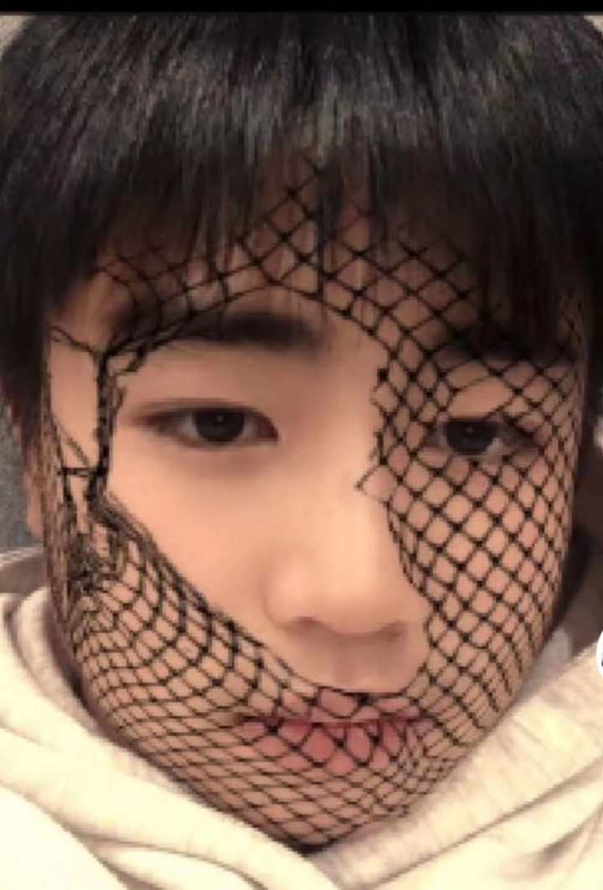
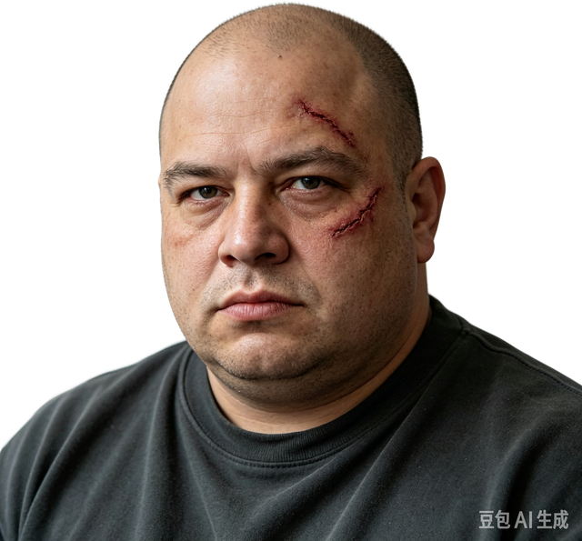

It begins with a task card, a fake earthquake,
and a man who runs like an elephant.
Two men. One dessert shop. One cup of milk tea.
The choice you make at the end of chapter five
decides who stays.
He talks too much. He eats too fast.
He never learned how to say a sweet thing —
but he remembers everything you said.
Play gently. Some of them are more fragile
than they look.